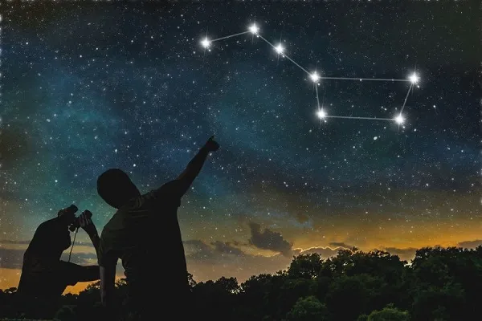

as constelações são regiões da abóbada celeste onde as estrelas são ligadas por linhas imaginárias que formam figuras.
Constelações são agrupamentos de estrelas ligadas por linhas imaginárias usadas para representar objetos, animais, criaturas mitológicas ou deuses. O conceito de constelação surgiu durante a Pré-História, quando as pessoas as usavam para descrever suas crenças ou mitologia, por isso, diferentes civilizações adotaram, ao longo da história, as suas próprias constelações.
As constelações também desempenharam importante papel durante as navegações, pois eram usadas como orientação, além disso, a palavra constelação tem origem no latim constelattio, cujo significado é agrupamento de estrelas.
"Para a Astronomia, as principais constelações são aquelas que foram catalogadas no ano de 1922: as 88 constelações, das quais 48 são oriundas dos estudos de Claudio Ptolomeu e as outras 40 que foram observadas entre os séculos XVII e XVIII."
"Entre o grande número de constelações existentes, podemos ressaltar aquelas que são utilizadas para a definição do zodíaco. O zodíaco é a área do céu próxima à eclíptica (plano em que o Sol realiza sua órbita aparente em relação à Terra), ou seja, é o caminho aparente pelo qual o Sol desloca-se durante o período de um ano."
"Nesse caminho, o Sol passa na frente de 12 constelações: Áries, Touro, Gêmeos, Câncer, Leão, Virgem, Libra, Escorpião, Sagitário, Capricórnio, Aquário e Peixes. Entretanto, no caminho aparente do Sol, ele também passa sobre a constelação de Ophiuccus (Serpentário), que não é reconhecida pelos astrólogos, uma vez que a passagem do Sol por ela é breve, de aproximadamente 19 dias."
Classificação das constelações: constelações são classificadas de acordo com a sua posição na abóbada celeste.